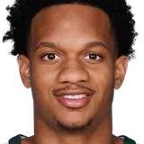

His best final NBA finish was #14 of 30, with the 2014-15 Milwaukee Bucks. In his 147 games for 3 teams over 4 seasons they went 63–84 (42.9%), −21 games under .500, with an average final finish of 18.2.
Jump to: Record by opponent · Season by season · Teammate help
Compare Johnny O'Bryant with…
Final NBA finish, season by season
Title Finals Other playoffs Missed playoffs. #1 = champion; the dashed line is last place that season. Each point opens that season's final standings.
All 30 teams ranked in 2014-15, his best finish (#14)Teammate help
 Kemba Walker1.01 season
Kemba Walker1.01 season Jamal Murray0.11 season
Jamal Murray0.11 season
Career
Career records (W–L, W − L, with and without) include 2026-27 games through Nov. 17, 2026; season counts and finishes are through 2025-26. Each card opens its board in the same scope. How we count.

Latest completed seasons
Season by season
Newest first; every header sorts. Final NBA finish is the team's rank among all teams that season (#1 = champion) and opens that season's standings. "Without him" uses the team-season window; the span line counts only the games between his first and last game for the team.
| 2017-18 | #20 of 30 | 36–46 43.9% | Missed playoffs | 36 of 82 | 15–21 41.7% | 21–25 45.7%span: 8–8, gap −8.3 | −4.0 | |
| 2016-17 | #18 of 30 | 40–42 48.8% | Missed playoffs | 7 of 82 | 2–5 28.6% | 26–28 48.1%span: 2–0, gap −71.4 | −19.6 | |
| 2016-17 | #20 of 30 | 36–46 43.9% | Missed playoffs | 4 of 82 | 2–2 50.0% | 10–12 45.5%span: N/A, gap N/A | +4.5 | |
| 2015-16 | #21 of 30 | 33–49 40.2% | Missed playoffs | 66 of 82 | 27–39 40.9% | 6–10 37.5%span: 6–10, gap +3.4 | +3.4 | |
| 2014-15 | #14 of 30 | 41–41 50.0% | Lost 1st round 2–4 | 34 of 82 | 17–17 50.0% | 24–24 50.0%span: 11–12, gap +2.2 | 0.0 |
On/off, starts and close games
From the lineup data, 1996-97 on. On/off is net points per 100 possessions with him on the floor minus off, a different unit from the win-rate gaps. Started and off the bench are team records in those games; close games are those within 5 points in the last 5 minutes with him on the floor.
Teammate help by season
Two separate numbers per season, each with every teammate that adds to it. Help this season = Teammates Score points for honors won that season by teammates who shared a game with him. Help coming in = the same teammates' honors from the season before. How help works.
- 2017-18
 Charlotte
Charlotte
Help this season: 1 = 1 Kemba Walker
Kemba Walker All-Star135 g
More: help coming in and other teammates
Help coming in (teammates' honors the season before): 1 = 1 Kemba Walker
Other teammates (no honors that season): Dwight Howard 36 g, Jeremy Lamb 35 g, Marvin Williams 34 g, Frank Kaminsky 33 g, Michael Kidd-Gilchrist 32 g, Treveon Graham 32 g, Michael Carter-Williams 30 g, Nicolas Batum 29 g, Malik Monk 26 g, Dwayne Bacon 20 g, Julyan Stone 8 g, Cody Zeller 6 g, Mangok Mathiang 3 g, Marcus Paige 1 g
- 2016-17
 Denver
Denver
Help this season: 0.125 = 0.125 Jamal Murray
Jamal Murray All-Rookie 2nd0.1257 g
More: help coming in and other teammates
Help coming in (teammates' honors the season before): 0.375 = 0.25 Nikola Jokic + 0.125 Emmanuel Mudiay
Other teammates (no honors that season): Jameer Nelson 7 g, Gary Harris 7 g, Juan Hernangomez 7 g, Nikola Jokic 6 g, Will Barton 6 g, Malik Beasley 6 g, Mike Miller 5 g, Wilson Chandler 5 g, Darrell Arthur 4 g, Jusuf Nurkic 3 g, Kenneth Faried 3 g, Emmanuel Mudiay 2 g, Mason Plumlee 1 g, Danilo Gallinari 1 g
- 2016-17Charlotte
Help this season: 1 = 1 Kemba Walker
Kemba Walker All-Star14 g
More: help coming in and other teammates
Help coming in (teammates' honors the season before): 0
Other teammates (no honors that season): Cody Zeller 4 g, Brian Roberts 4 g, Jeremy Lamb 4 g, Michael Kidd-Gilchrist 4 g, Nicolas Batum 4 g, Marco Belinelli 4 g, Marvin Williams 4 g, Christian Wood 3 g, Briante Weber 1 g, Treveon Graham 1 g, Frank Kaminsky 1 g
- 2015-16
 MilwaukeeHelp this season: 0, no honored teammate
MilwaukeeHelp this season: 0, no honored teammate - 2014-15MilwaukeeHelp this season: 0, no honored teammate
More: help coming in
Help coming in (teammates' honors the season before): 0.875 = 0.75 Michael Carter-Williams + 0.125 Giannis Antetokounmpo
Record against each opponent
Regular season, through 2025-26 (2026-27 games not included): 147 games, 63–84, against 30 franchises.
Grouped by franchise (named as today); game lists keep each team's name that season. Filters and the tab are kept in the URL, so a filtered view can be shared.
| Games list | |||||||
|---|---|---|---|---|---|---|---|
| 8 | 5–3 | 62.5% | +2 | N/A | 2014-15 to 2017-18 | ||
| 8 | 6–2 | 75.0% | +4 | N/A | 2014-15 to 2017-18 | ||
| 8 | 1–7 | 12.5% | −6 | N/A | 2014-15 to 2017-18 | ||
| 7 | 2–5 | 28.6% | −3 | N/A | 2014-15 to 2016-17 | ||
| 6 | 1–5 | 16.7% | −4 | 0–1 (0–1 in games) | 2014-15 to 2017-18 | ||
| 6 | 4–2 | 66.7% | +2 | N/A | 2014-15 to 2017-18 | ||
| 6 | 2–4 | 33.3% | −2 | N/A | 2015-16 to 2017-18 | ||
| 5 | 0–5 | 0.0% | −5 | N/A | 2014-15 to 2017-18 | ||
| 5 | 3–2 | 60.0% | +1 | N/A | 2014-15 to 2017-18 | ||
| 5 | 3–2 | 60.0% | +1 | N/A | 2015-16 to 2017-18 | ||
| 5 | 1–4 | 20.0% | −3 | N/A | 2014-15 to 2017-18 | ||
| 5 | 1–4 | 20.0% | −3 | N/A | 2014-15 to 2017-18 | ||
| 5 | 3–2 | 60.0% | +1 | N/A | 2014-15 to 2017-18 | ||
| 5 | 3–2 | 60.0% | +1 | N/A | 2014-15 to 2017-18 | ||
| 5 | 4–1 | 80.0% | +3 | N/A | 2014-15 to 2017-18 | ||
| 5 | 2–3 | 40.0% | −1 | N/A | 2014-15 to 2017-18 | ||
| 5 | 4–1 | 80.0% | +3 | N/A | 2014-15 to 2017-18 | ||
| 5 | 0–5 | 0.0% | −5 | N/A | 2014-15 to 2017-18 | ||
| 5 | 1–4 | 20.0% | −3 | N/A | 2014-15 to 2017-18 | ||
| 4 | 4–0 | 100.0% | +4 | N/A | 2014-15 to 2015-16 | ||
| 4 | 2–2 | 50.0% | 0 | N/A | 2014-15 to 2015-16 | ||
| 4 | 0–4 | 0.0% | −4 | N/A | 2014-15 to 2017-18 | ||
| 4 | 1–3 | 25.0% | −2 | N/A | 2014-15 to 2016-17 | ||
| 4 | 4–0 | 100.0% | +4 | N/A | 2014-15 to 2015-16 | ||
| 4 | 1–3 | 25.0% | −2 | N/A | 2015-16 to 2017-18 | ||
| 3 | 1–2 | 33.3% | −1 | N/A | 2015-16 to 2017-18 | ||
| 3 | 1–2 | 33.3% | −1 | N/A | 2017-18 | ||
| 3 | 1–2 | 33.3% | −1 | N/A | 2015-16 to 2017-18 | ||
| 3 | 1–2 | 33.3% | −1 | N/A | 2014-15 to 2016-17 | ||
| 2 | 1–1 | 50.0% | 0 | N/A | 2015-16 to 2017-18 |
Rows add up to his career record in his games. A playoff series counts when he played in it; early round-robin games show as games only. How we count.
Playoffs, with and without him
Arrival and departure
Team wins per 82 games the season before he arrived vs his first season there, and his last season vs the season after he left. Per 82 so short seasons compare fairly. These are team records, not a measure of what he did.
| Left | 2018-19 | 2017-18: 36–46 36.0 per 82 | 2018-19: 39–43 39.0 per 82 | +3.0 wins | |
| Left | 2017-18 | 2016-17: 40–42 40.0 per 82 | 2017-18: 46–36 46.0 per 82 | +6.0 wins | |
| Arrived | 2016-17 | 2015-16: 33–49 33.0 per 82 | 2016-17: 40–42 40.0 per 82 | +7.0 wins | |
| Arrived | 2016-17 | 2015-16: 48–34 48.0 per 82 | 2016-17: 36–46 36.0 per 82 | −12.0 wins | |
| Left | 2016-17 | 2015-16: 33–49 33.0 per 82 | 2016-17: 42–40 42.0 per 82 | +9.0 wins | |
| Arrived | 2014-15 | 2013-14: 15–67 15.0 per 82 | 2014-15: 41–41 41.0 per 82 | +26.0 wins |
Seasons split between teams
Each team's record before his first game for it, inside his window (games with and without him) and after his last game, in the seasons he played for two or more teams.
Best duos
Team record in regular-season games both played, top 10 by win %, at least 50 games together.
 OJ Mayo
29–33 46.8%
OJ Mayo
29–33 46.8% Jerryd Bayless
33–38 46.5%
Jerryd Bayless
33–38 46.5% Khris Middleton
44–53 45.4%
Khris Middleton
44–53 45.4% John Henson
35–44 44.3%
John Henson
35–44 44.3% Giannis Antetokounmpo
43–55 43.9%
Giannis Antetokounmpo
43–55 43.9% Jabari Parker
26–34 43.3%
Jabari Parker
26–34 43.3%
Rashad Vaughn 24–34 41.4% Greg Monroe
26–37 41.3%
Greg Monroe
26–37 41.3% Michael Carter-Williams
30–52 36.6%
Michael Carter-Williams
30–52 36.6% Miles Plumlee
21–37 36.2%
Miles Plumlee
21–37 36.2%